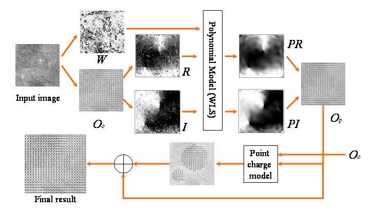
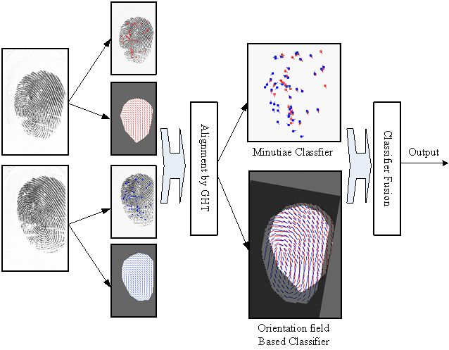
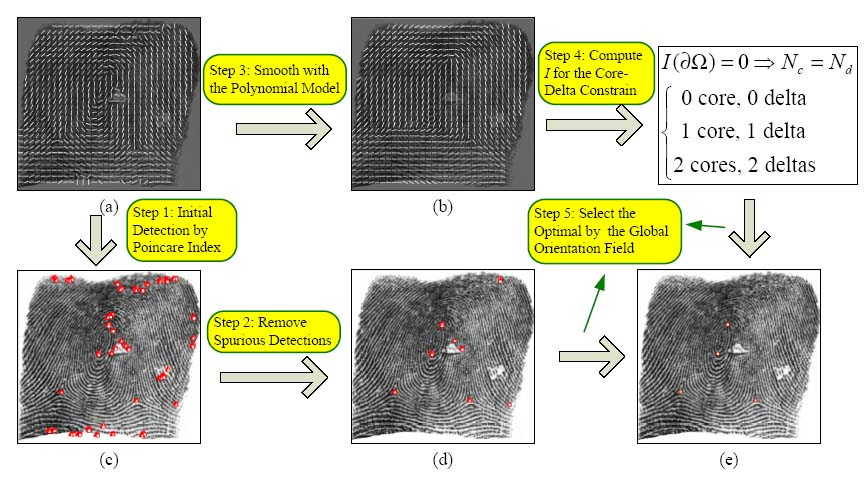

Fingerprint Orientation Field Modeling
and Its Applications
Jinwei Gu, Jie Zhou and Chunyu Yang
Abstract
As a global feature of fingerprints, the orientation field is important
for automatic fingerprint recognition. Many algorithms have been
proposed for orientation field estimation, but their results are
unsatisfactory for poor quality fingerprint images. In this project, we
proposed a analytic model for the 2D orientation field of fingerprint
texture patterns. The proposed model includes both a bivariate
polynomial component for fitting the global orientation field, and
"point-charge" models for each of the singular points to further improve
the accuracy of the modeling.
This analytic model then can be used to: compute high-quality orientation
field for poor quality images, store the orientation field with a few
parameters, and together with the minutiae points form a complete
representation of fingerprints which can then be used for reconstruction
and synthesis of fingerprint images.
Based on this analytic model, we can also use the orientation field as
as a discriminant global feature for recognition.
We combined it with the widely-used local
feature---minutiae points in recognition and showed it can largely
improve the recognition performance.
Finally, we investigated the orientation field patterns around the
singular points (i.e., core and delta points), derived topological
principles for the singular points, and applied these principles
for detecting singular points, especially for poor-quality images.
Publication
- Jinwei Gu and Jie Zhou, "A
Novel Model for Orientation Field of Fingeprints",
in Proc. of IEEE Conference on Computer
Vision and Pattern Recognition (CVPR), vol.2, pp.
493-498, 2003.
- Jie Zhou and Jinwei Gu, "A
Model-based Method for the Computation of Fingerprints' Orientation
Field", IEEE Transaction on Image Processing,
vol.13, no.6, p. 821-835, June 2004.
- Jinwei Gu, Jie Zhou and Chunyu Yang, "Fingerprint
Recognition by Combining Global Structure and Local Cues".
IEEE Transaction on Image Processing, vol. 15, no. 7, July 2006, pp
1952-1954.
- Jie Zhou, Jinwei Gu and David Zhang, "Singular
Points Analysis in Fingerprints Based on Topological Structure and
Orientation Field", International Conference of Biometrics
(ICB), August 2007, pp 261-270.
- Jie Zhou, Fanglin Chen, and Jinwei Gu, "A Novel Algorithm for
Detecting Singular Points from Fingerprint Images".
to appear in IEEE Transactions on Pattern Analysis and Machine Intelligence (PAMI), 2009.
1. Modeling of Fingerprint Orientation Field

2. Orientation Field As a Global Feature for Fingerprint Recognition

3. Topological Characterisitc of Fingerprint Orientation Field and Its Application for Singular Point Detection

|